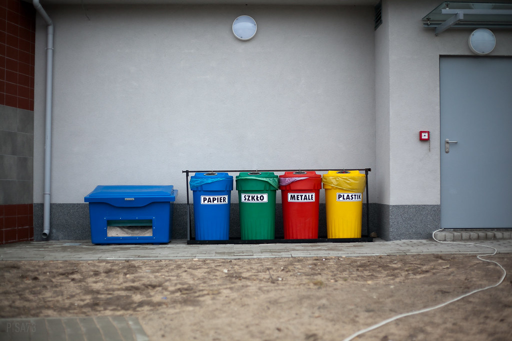
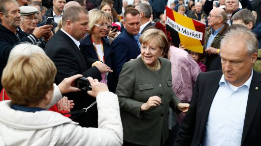

The German City

The Federal Republic of Germany (German: die Bundesrepublik Deutschland), as referred to Germany. Germany is a republic of the Commonwealth of Central Europe; it borders many countries: Denmark in the north and bordering the Netherlands, Belgium, Luxembourg, and France in the west. It borders Switzerland and Austria to the south and the Czech Republic and Poland to the east. The country is composed of 16 federal states; each state has its power and jurisdiction.
The German Environmentalism

The Germans regard environmental protection as the second biggest problem in the country after employment. According to a recent poll conducted by the Federal Ministry of Environmental Protection, 85% said that environmental issues should be second only to employment.
The German Party

According to many articles and news about the rising of AfD, we know that AfD started in East Germany where its economy did not get many benefits from the reunification of Germany. In The beginning, AfD declared that Germany should go out of The European Union and use Mark as German currency again since AfD noticed that Germany has to contribute so many money invest on other countries such as Italy and Greece.